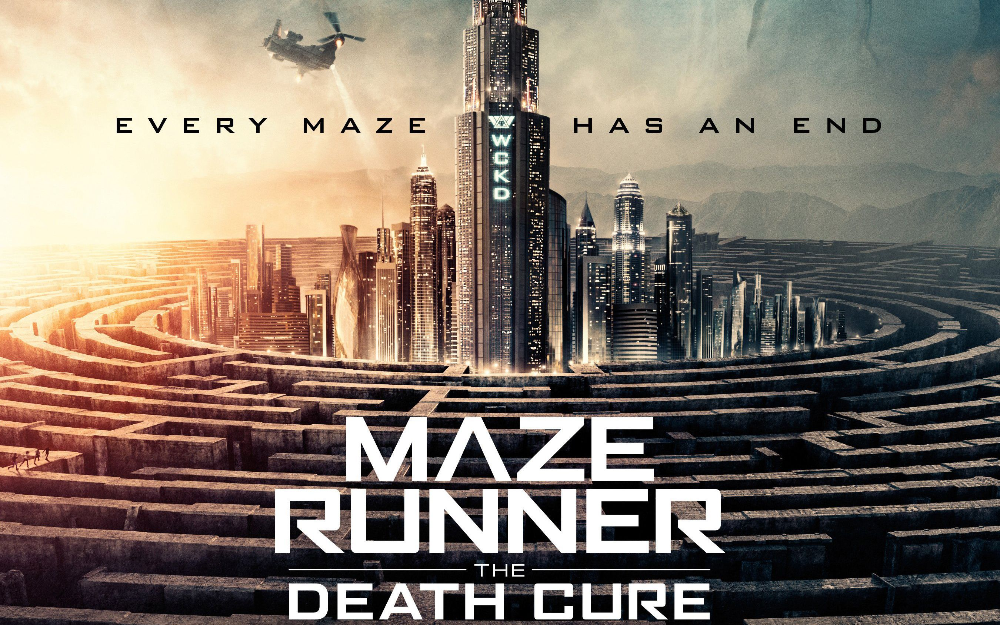

Maze Runner: La Cura Mortal96% de coincidencia 2 h 20 minThomas lidera a un grupo de fugitivos por un laberinto en la búsqueda de una cura para una enfermedad mortal. Deberá penetrar en una ciudad legendaria para salvar a sus amigos, pero descubre que CRUEL tiene un plan.REPRODUCIRTRAILERProtagonistas: Dylan Obrien, Thomas Brodie, Kaya Scodelario. Genero: Acción.
 TRAILER
TRAILER